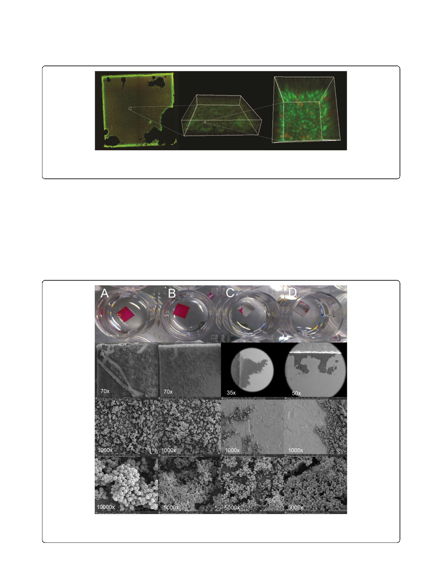

Sandbakken et al. Journal of Orthopaedic Surgery and Research (2020) 15:522
Page 6 of 9
Fig. 5 Epifluorescence image of a plate after sonication (a). A marked section (stippled line) of the epifluorescence image is visualized with
confocal laser scanning microscopy where multiple z-stacks are rendered as a 3D-image (b). A section of this image is further magnified and
rendered as a 3D-image with a different viewing angle (c). Coccoid bacteria are evident as green (live) and red (dead) cells
likely due to the prolonged time of biofilm growth
resulting in more biofilm mass [3]. It is possible that
the correlation between area covered by biofilm after
sonication and the increased number of bacteria in
the sonication fluid is detectable because of increased
bacterial mass after 72 h of incubation. The change of
nutrient every 24 h was essential to facilitate matur-
ation of the biofilm while preserving bacterial
viability.
Our study is limited because generalization of the re-
sults into clinical conditions is problematic and ham-
pered with uncertainties. Further studies should include
in vivo biofilms. The highly variable effect of sonication
seen in our experiments only applies to in vitro biofilm
established under simple static culture conditions. Re-
sults from the 72-h experiment must be interpreted with
care as the number of specimens is low. However, we do
not suspect less variation by increasing the number of
Fig. 6 Two positive control steel plates (A and B, not sonicated) covered with biofilm processed for SEM and photographed with increasing
magnification. Plate A (× 70 magnification) shows a scratch from the forceps used for handling indicating a fragile binding to the surface. 2 of
the 46 plates (C and D) were processed for SEM after sonication